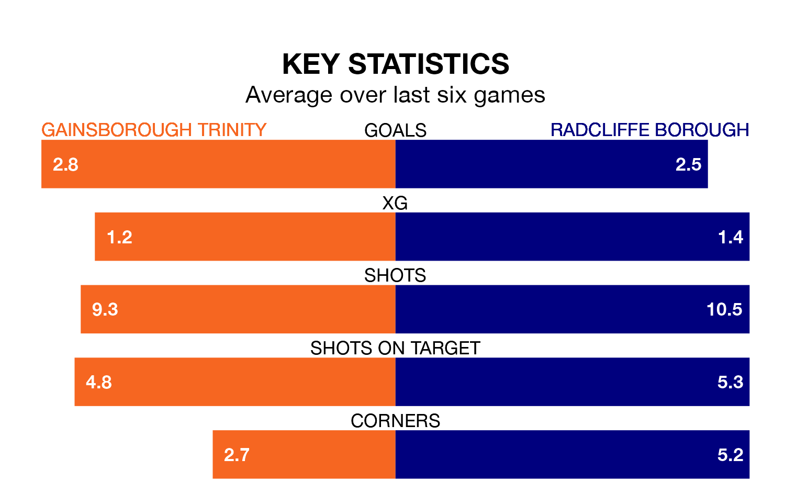

Radcliffe Borough are strong favourites to take all three points despite Gainsborough Trinity's home advantage in Saturday's match at the Northolme.
*Betting Company* are offering odds of 1.99 on Radcliffe sealing the win, with the visitors sitting first in the Northern Premier League table.
Gainsborough Trinity, who are 11th in the league and 30 points behind the Boro, are priced at 2.81 to win. A draw is set at 3.85.
With 102 goals in 39 games so far this season, Radcliffe are the league's highest scorers with 2.6 goals per game. And they are conceding fewer than average, letting in 56 goals at a rate of 1.4 per game.
Gainsborough Trinity, meanwhile, are average scorers, with 1.6 goals per game. They have also conceded 1.6 goals per game.
In the last 10 years, Gainsborough Trinity and Radcliffe have played each other on eight occasions. Gainsborough Trinity won two of them, Radcliffe three, and they drew three times.
On average, the Blues scored 1.4 goals and the Boro 1.2 in those matches.
Their last meeting was on November 11, when Radcliffe won 1-0 at home.
The Blues are in good form in the Northern Premier League, with four wins and a draw from their last six games.
And also with four wins and a draw over that period, Borough's form is identical – they have both taken 13 points from 18.
Gainsborough Trinity's last match was on April 20, a 3-3 draw against Bradford Park Avenue.
Radcliffe drew 1-1 with Basford United last time out, also on April 20.
Updated: 07:59 (UTC), 26/04/24